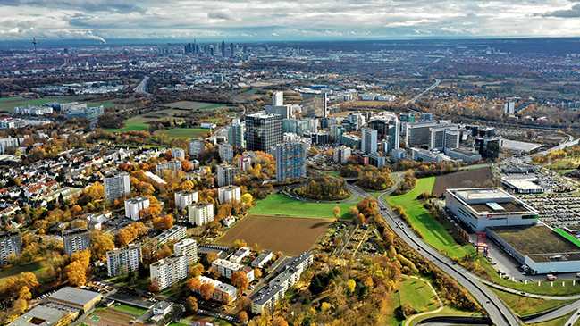

Wirtschaft
Eschborn - auch ein herausragendes wirtschaftliches Umfeld

Wirtschaftsstandort
Eschborn liegt zentral gelegen (nur 7 km von Frankfurt entfernt) und ist verkehrsgünstig gelegen (direkte S-Bahn-Anschlüse und direkt an der Autobahn gelegen). Diese Vorteile kombiniert mit der Lage in der
wachstumsstarken Metropolregion Frankfurt Rhein-Main machen Eschborn für Unternehmen attraktiv.
Eschborn bietet ein attraktives Umfeld für die Unternehmen. Grund hierfür ist nicht nur die moderne Infrastruktur
und die unternehmensfreundliche Steuerpolitik, sondern auch die Wirtschaftsstärke, Innovation, Branchenvielfalt und Internationalität.
Zahlen & Fakten
Ca. 4.500 Unternehmen (lokale Kleinbetriebe,
Mittelstand und Weltkonzerne) sind in Eschborn vertreten.
Folgende Branchen sind in Eschborn aktiv: Finanzen, IT & Telekommunikation, Chemie & Pharma und Consulting.
Zu den bekannten Unternehmen vor Ort
gehören die Deutsche Börse, Ernst & Young, SAP, Samsung, GIZ und BAFA.In Eschborn arbeiten über 40.000 Menschen.
Weitere Details:
Gewerbesteuerhebesatz: 330%
Grundsteuer B
Hebesatz: 140%
Kaufkraftindex: 130,3%
Einzelhandelszentralität: 177,1 (2021)
Wirtschaftsförderung
Die Wirtschaftsförderung hat das Ziel, Eschborn wettbewerbsfähiger zu machen und neue Arbeitsplätze zu schaffen. Gleichzeitig sollen Bestandsunternehmen und neue Unternehmen unterstützt werden.
Benötigst du Informationen wie du dein Unternehmen gründen bzw. weiterentwickeln sollst oder denkst du nach, dein Unternehmen in Eschborn anzusiedeln?
Dann bist du hier richtig, denn die wir als
Wirtschaftsförderung sind die zentrale Kontaktstelle für die deine benötigten Informationen.
Wir geben Tipps in wichtigen Belangen (Genehmigungsverfahren im baulichen/aufenthaltsrechtlichen Bereich,
Suche nach Fach- und Arbeitskräften oder Suche nach geeigneten Kooperationspartnern).
Kontaktiere uns unter Tel. 06196 490 333 Wirtschaftsfoerderungeschborn.de